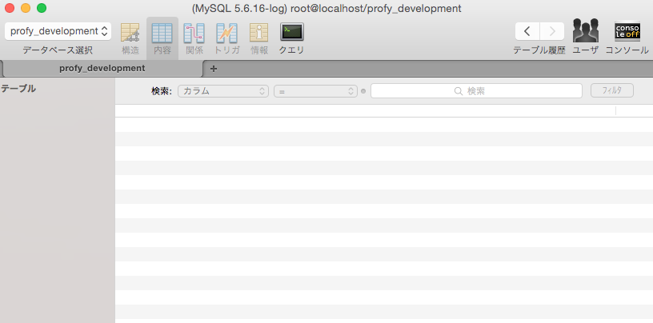
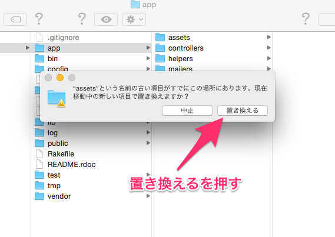

このカリキュラムはRailsの基本的な学習を終えた方向けに、実際の開発を通してRailsについての学習を行なうためのものです。細かい指示や実装方法は記載してありませんので、わからないことがあれば自ら調べて実装してみましょう。
本カリキュラムでは「Profy」と呼ばれるWebアプリケーションを開発します。Profyは、同じグループ内のユーザーと「一問一答形式」で質問と回答を繰り返しながら自分のプロフィールを充実させていくサービスです。イメージをつかむためにも、ぜひ一度Profyにアクセスして利用してみてください。
※新規登録時のグループ名は、techcampの後に自分の参加期の入力してください。
(例)TECH::CAMP第4期なら→techcamp4
新規登録後、認証のために届くメールが迷惑メールに入っている可能性があります。
本ページのことです。このカリキュラムで作成するアプリケーションの概要を把握します。また、新規Railsアプリケーションを作成して開発を始める準備を整えます。
新規Railsアプリケーションやデータベースの作成を行ない、開発のための準備を行ないます
各ユーザーのプロフィールを表示するページ、同じグループのメンバーを表示するページを開発していきます
Profyのメイン機能であるタイムラインを実装していきます。
テーブルの高度な関連付けなどを実装し、タイムラインをさらに充実させます。
Profyに機能を加え、アプリケーションの利便性をアップさせます。
新規アプリケーションを作成して開発を行なうための準備を行ないます。アプリケーションは前回までの開発と同様に「projects」というディレクトリに配置作成します。
rails newコマンドについてはpictweetの開発のはじめに行いました。今回も同様にprofyの開発はここからスタートします。
pictweet、review_siteと同様に今回もmysqlデータベースを使用します。そのため、rails newコマンドに「-d mysql」というオプションを付けて新規railsアプリケーションを作成します。
profyを作成にあたって必要なGemをインストールしていきます。
GemとはRubyでかかれたライブラリでGemfileに追記してターミナルでbundle installすれば利用できるようになることは既に学習しました。
今回は7つのGemを新しく追加します。
また、データベースを扱うgemであるmysql2の最新バージョン（0.4.0）に現在不具合があるため、低いバージョンを指定します。
Gemfileはprofyフォルダの直下にあります。
1 2 3 4 5 6 7 8 9 10 11 |
#7行目付近のmysql2の行を以下のように変更する
gem 'mysql2', '0.3.18'
#以下は行末に追加する
gem 'pry-rails'
gem 'devise'
gem 'paperclip'
gem 'kaminari'
gem 'therubyracer'
gem 'twitter-bootstrap-rails'
gem 'bootstrap-material-design', '0.1.4'
|
既に利用したことあるgemばかりですが、あらためてそれぞれの役割を記載しておきます。
最後の'therubyracer'、'twitter-bootstrap-rails'、'bootstrap-material-design'は、見た目に関わるgemなので今は役割について特に気にしなくて大丈夫です。
| gemの名称 | 役割 |
|---|---|
| pry-rails | デバッグ用のgemです。Railsアプリケーション開発には必須のツールといえます。 |
| devise | rails1,rails2両方で使ったログイン機能を作るためのgemです。 |
| paperclip | 画像アップロードを簡単に実装できるgemです。rails2ですでに利用しました。 |
| kaminari | ページネーションを実現するためのgemです。 |
1 2 3 4 5 |
$ cd ~/projects/profy
# 「profy」ディレクトリに移動
$ bundle install
# Gemfileの内容に従ってGemをインストール
|
アプリケーションを開発する上で必要なデータベースをコマンドを使用して作成します
rake db:createを実行するとconfig/database.ymlの内容にもとづいてデータベースが作成されます。
profy_developmentがあることを確認できればOKです。

本カリキュラムで皆さんの実装してもらうのはロジックの部分だけです。
そのためデザインに関するファイルはこちらで既に準備してあるものを先に配置します。
zipファイルを開くと以下のフォルダが入っていると思います。

お疲れ様でした！このカリキュラムの終わりに確認問題を解きましょう。
 大宅 誠人
大宅 誠人